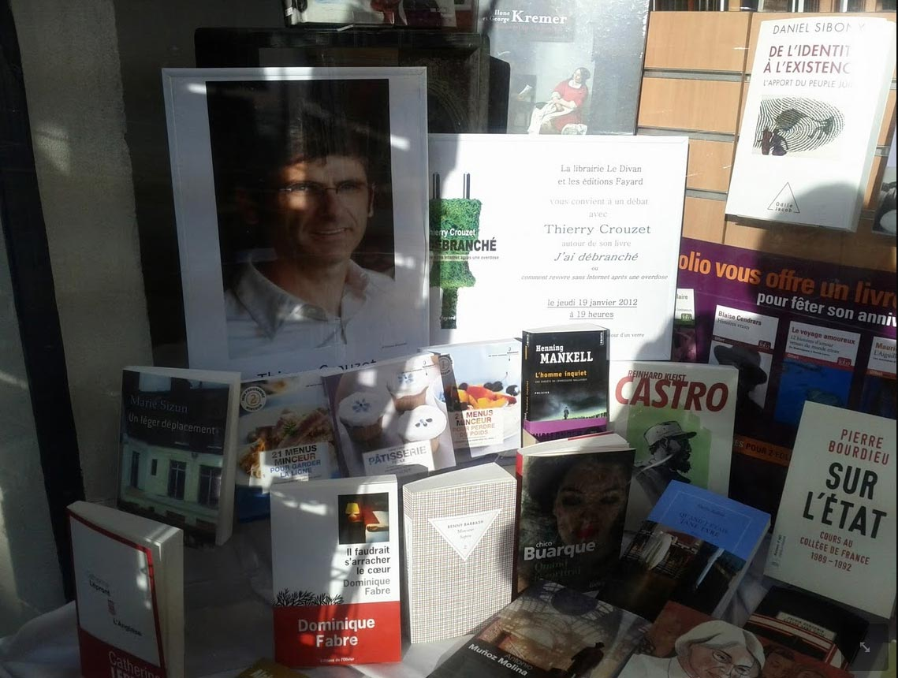

Rassemblement national des hyperconnectés
Pour fêter la sortie de J’ai débranché, j’ai invité à la librairie Le Divan, métro Convention à Paris, jeudi 19 janvier à 19 heures, quelques hyperconnectés. Starring : Cyrille de Lasteyrie alias Vinvin, Seb Musset et Christophe Grébert qui célèbre cette année ses 10 ans de blogging. Rejoignez-nous...

Suite | 2012 | Sommaire | Texte publié vendredi 13 janvier 2012